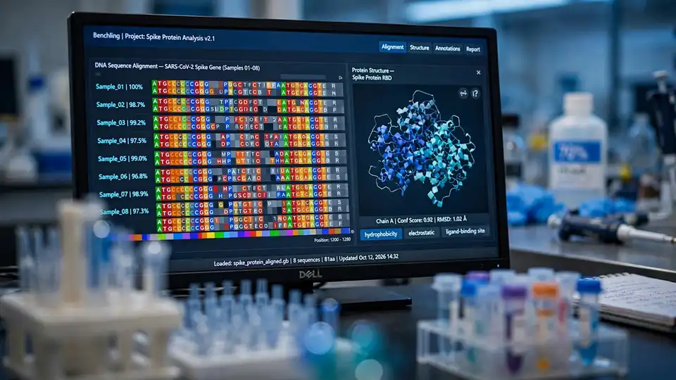

Drylab AI raises $3M seed to build autonomous ‘AI scientists’ for biopharma labs
Drylab AI, a Singapore startup building autonomous agents that run scientific research workflows end to end, has raised US$3 million in seed funding led by Vertex Ventures Southeast Asia & India — announced October 13. The pitch: ‘AI scientists’ that take ownership of an entire experiment, from hypothesis to verified result, without a researcher in the loop.
Drylab AI, an autonomous agent platform for scientific research, has raised US$3 million in a seed round led by Vertex Ventures Southeast Asia & India, with participation from PatSnap, the AI-driven innovation-intelligence provider. The announcement, dated October 13 in Singapore, gives the 2025-founded startup its first institutional backing as it pushes agents deeper into regulated biopharma R&D.
Agents that own the whole workflow
The claim is bigger than a coding copilot. Drylab’s agents take ownership of entire research workflows: understanding the scientific objective, formulating an analytical strategy, selecting from more than 800 integrated scientific tools and databases, provisioning computational resources, executing the experiments, interpreting the results, and troubleshooting failures on their own. Rather than requiring researchers to continuously prompt, instruct, or supervise individual tasks, the system runs the loop itself.
The differentiator Drylab points to is a proprietary verification model, trained on real scientific analysis runs, that evaluates the agents’ analytical decisions and flags methodological errors — letting the agents independently correct and refine their work. For a field where a wrong normalization step can quietly invalidate a paper, a self-checking layer is the whole ballgame.

The bottleneck it’s chasing
The bet lands on a real asymmetry. Sequencing a human genome cost about US$95 million in 2001 and about US$500 by 2022, according to the US National Human Genome Research Institute — but the ability to analyze that flood of data has not kept pace. Thousands of specialized bioinformatics tools, fragmented compute, and a shortage of computational expertise mean scientists routinely spend weeks coordinating analyses, troubleshooting pipelines, and waiting for results.
Private infrastructure, paying customers
Drylab says it deploys on private infrastructure or local workstations, so pharmaceutical companies and research institutions can run autonomous agents without their data or intellectual property leaving their own environment. The company launched commercially in February 2026 and says it has since signed paying customers across leading pharmaceutical companies, cancer centres, biomedical research institutes, and universities in the United States, Europe, and Asia.
The seed capital goes to hiring enterprise sales staff, expanding the engineering and biology teams, and pursuing the security and compliance certifications that large research organizations require — the unglamorous prerequisites for selling AI into pharma.
Who’s behind it
Drylab was founded in 2025 by CEO John Phan, who previously carried out AI research with ByteDance’s Seed team; CTO Huy Phan, a visiting research engineer at Andrew Ng’s Landing AI; and Chief Science Officer Nhi Nguyen, a PhD candidate in biomedical science at Nanyang Technological University who taught herself bioinformatics to analyze her own lab’s data. “AI is pushing the boundaries of science,” John Phan said in the announcement. “Our vision is to bring that capability into the daily work of highly regulated industry like biopharma through a swarm of autonomous AI agents working alongside researchers.”
Genping Liu, a general partner at Vertex Ventures Southeast Asia & India, framed it as the lab’s turn after software: just as AI transformed software engineering, agentic workflows are set to reinvent laboratory research. Drylab is still early — seed stage, compliance certifications pending — but the combination of a paying customer base within eight months of commercial launch and an investor like PatSnap, whose life-sciences network opens pharma doors, gives this one more traction than most lab-AI announcements.
Sources: Vertex Ventures — “Drylab Raises US$3 Million to Build AI Scientists That Grow Smarter with Every Experiment” (October 13, 2026); The SaaS News — “Drylab AI Raises $3M Seed” (October 13, 2026); AsiaConnect Magazine — “Drylab AI Secures $3 Million Seed Funding to Accelerate Its AI Agent Platform” (October 13, 2026).
Sources: Accelya — “Accelya launches FLX Recover to transform airline passenger recovery” (October 13, 2026); PR Newswire — “Accelya launches FLX Recover to transform airline passenger recovery” (October 13, 2026); Unite.AI — “Accelya Debuts FLX Recover Agentic AI for Airline Passenger Recovery” (October 13, 2026).